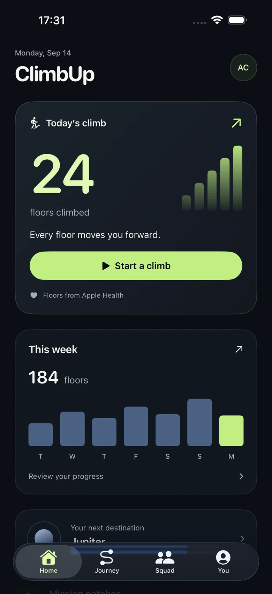
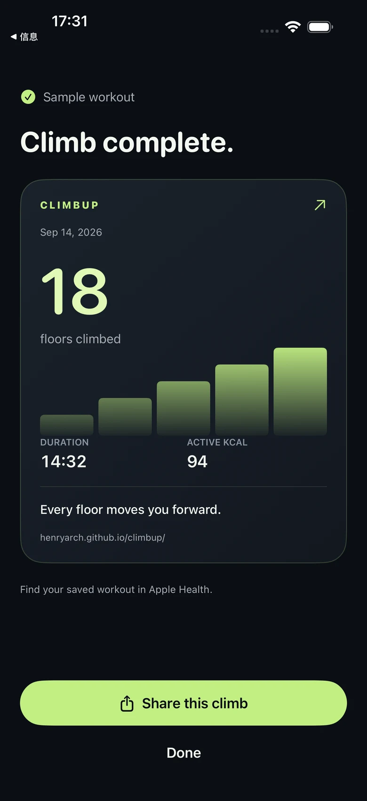

Your stairs, in one place.
See today’s floors and your week at a glance. Connect Apple Health to bring your existing floor history into view.
Stair counter · iPhone + Apple Watch
The floors you climb deserve more than a forgotten number. Turn your Apple Health stair history into daily progress, saved workouts and a journey that keeps going.
One paid download. No subscription.
$6.99 in the US. Check the App Store for your local price.
Explore ClimbUp 2.4. Screens below preview the upcoming update. Check the App Store for the version currently available.

Climb. Save. Repeat.
Keep the everyday part simple. Make the long-term progress worth seeing.
See today’s floors and your week at a glance. Connect Apple Health to bring your existing floor history into view.
Start a dedicated stair workout. After Apple Health confirms the save, see a result card you can choose to share.
Turn your accumulated floor history into a space-themed journey. A rest day doesn’t erase what you’ve climbed.
Coming in 2.4 · After the last floor
A clear result for a real effort. Review the duration and available workout data, then share a small win on your terms.
Screens show sample data. Available readings depend on your device and permissions.

The full ClimbUp experience, without a recurring bill.
No. ClimbUp on iPhone reads floor history from Apple Health. An Apple Watch adds workouts from your wrist. iPhone heart-rate readings need a compatible source.
Live iPhone workout data requires iOS 26 or later and compatible data sources. Earlier iOS versions record workout duration. Readings can arrive with a delay; missing data is shown as unavailable.
Automatic stair-machine floor counting is not supported. ClimbUp is designed around real stairs and the flights-climbed data your devices provide to Apple Health.
Raw HealthKit samples stay on your device. Optional social features share derived progress using Apple services. A result card is shared only when you choose to share it. See the privacy policy for details.
No. ClimbUp is a paid download. The US price is $6.99; local prices vary. Check your storefront before purchasing.